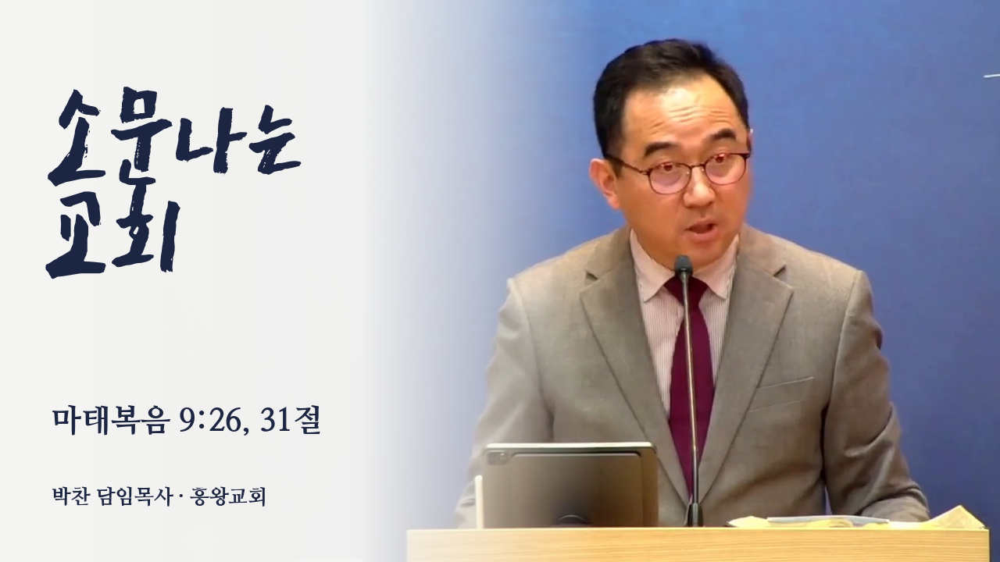

흥왕교회 · 11월 22일 주일 · 지난 자료
주일설교 유튜브 자료

소문나는 교회
롱폼 자세히 보기 제목·설명·챕터·썸네일
롱폼은 성경 봉독(마태복음 9장 26절, 31절)을 빼고 설교 시작("여러분은 교회가 부흥하기 위해서…", 라이브 1:02:58)부터 끝 축원(라이브 1:34:33)까지입니다. 영상 파일(약 607MB)은 용량이 커서 이 페이지에 올리지 않고 별도로 전달합니다.
챕터 15개
- 0:00교회 부흥에 필요한 것은 무엇인가
- 0:43복음의 소문은 이야깃거리가 아니다
- 2:25교회가 끝났다는 시대에
- 3:13첫째, 교회 안에서 시작되는 은혜의 증언
- 6:48셀, 하나님의 일하심을 나누는 자리
- 10:59모두가 셀 리더가 되기를
- 13:17작은 은혜라도 있는 그대로
- 14:56둘째, 예수의 소문을 전하라
- 18:30허풍이 아니라 믿음을 쓰는 사람
- 19:48셋째, 드러나기 전에 충성하고 인내하라
- 21:22뿌리를 내리는 시간
- 24:35매일 말씀을 묵상하십시오
- 26:27마음의 완전함과 손의 능숙함 (시편 78편 72절)
- 28:44반드시 오는 시험, 이길 힘을 주시는 하나님
- 30:22소문의 중심에 예수 그리스도

숏츠 6편
화·목·토에 올릴 3편을 골라 ‘선택’을 눌러 주세요.
-
내일 열매 맺는데 오늘 포기하시겠습니까?
설명
설교와의 연결 「소문나는 교회」 설교의 '포기 직전의 인내' 대목
평생이 인내의 시간이었을지도 모릅니다. 열매가 코앞인데 오늘 포기하면 너무 아깝지 않습니까?
-
그건 믿음이 아니라 허풍입니다
설명
설교와의 연결 「소문나는 교회」 설교의 '믿음과 허풍의 차이' 대목
말로는 '부흥합니다' 하면서 아무것도 하지 않는다면 그건 허풍입니다. 우리는 믿음을 쓰는 사람입니다.
-
교회 소그룹이 가족이어야 하는 이유
설명
설교와의 연결 「소문나는 교회」 설교의 '셀은 가족' 대목
셀은 숫자를 나누는 조직이 아닙니다. 아프면 찾아가고 기쁘면 함께 웃는, 주 안에서 맺어진 가족입니다.
-
작은 은혜를 부풀리지 마세요
설명
설교와의 연결 「소문나는 교회」 설교의 '은혜를 부풀리지 말 것' 대목
창피해서 은혜를 부풀리고 서로 경쟁하듯 간증할 필요가 없습니다. 작은 은혜라도 있는 그대로 나누면 됩니다.
-
하나님은 완벽한 사람을 찾지 않으십니다
설명
설교와의 연결 「소문나는 교회」 설교의 '완전함은 완벽함이 아니다' 대목
우리는 실수투성이입니다. 하나님이 찾으시는 '마음의 완전함'은 흠이 없는 것이 아니라 하나님 앞에서 진실한 것입니다.
-
아직 안 됐어도 선포하는 게 믿음입니다
설명
설교와의 연결 「소문나는 교회」 설교의 '아직 안 됐어도 선포하는 믿음' 대목
'괜히 말했다가 안 되면 어떡하지?' 바로 그때 선포하는 것이 믿음입니다. 주님이 하시니까요.